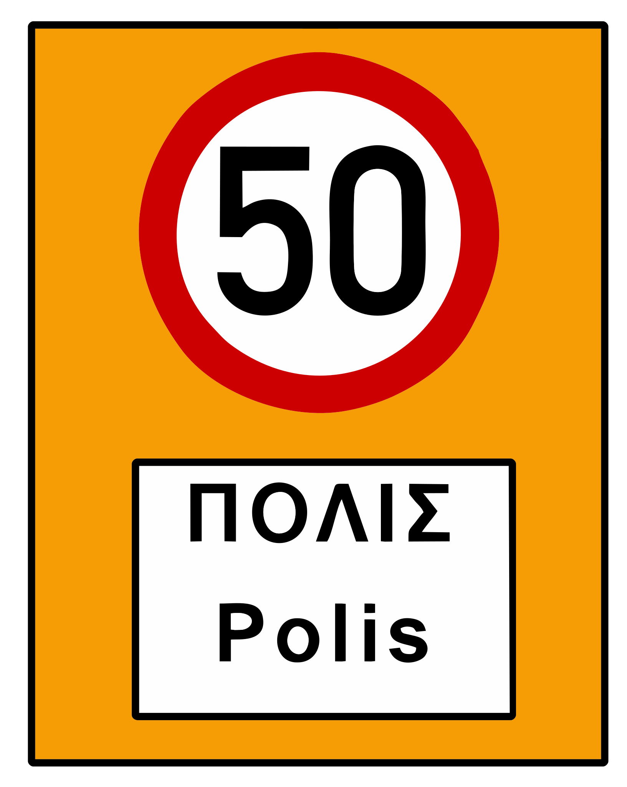

Loading...

Built-up area
ℹ Information Signs
📖 Description
This sign marks the beginning of a built-up area where stricter traffic rules apply. The default speed limit becomes 50 km/h unless another limit is posted. Drivers must be especially attentive to pedestrians, cyclists, and increased roadside activity.